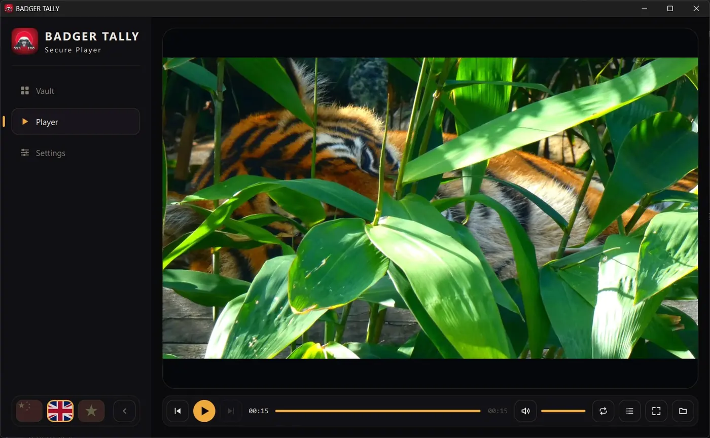

AuraLink Studio / BadgerTally
Stable v1.0.1 · Windows & macOSFor the right
eyes only.
BadgerTally comes in two parts: BadgerPack, where you package your videos, and the BadgerTally player, where viewers open them. Package once, then give each viewing machine its own unlock ticket. If a file gets out, a stranger's machine still cannot open it — and the on-screen watermark tells you which machine played it.

Not an ordinary video player.
A video you sell or hand to students is easy to copy and pass around. BadgerTally keeps it with the people you choose — and tells you when it leaks.
- Package once, deliver to manyNo need to redo it for each viewer: one file serves your whole organisation, and each viewing machine needs just one ticket.
- A copy on another machine is uselessA machine without a ticket cannot open the file — even if the file was forwarded or posted online.
- Tracing watermarkThe viewing machine's code and a running clock float faintly over the picture. If someone records the screen, you still know which machine it came from. You can turn it off when you don't need it.
- Nothing watchable left on the machineThe video is opened only while it plays; no watchable copy is ever written to the viewer's disk.
- Works offlineNo internet needed to package or to watch. We never receive your videos, hold your keys, or track who watches what.
- A complete playerA library with previews, playlists, repeat and smooth full screen — in Vietnamese, English and Chinese.
Three steps, clear roles.
1 · The publisher packages
Open BadgerPack, choose a folder of videos and press Seal. Each video only needs packaging once.
2 · The viewer sends a device code
In BadgerTally, open Settings, copy the device code and send it to the publisher.
3 · Load the ticket and watch
The publisher issues a ticket for that exact code. Load it once and that machine opens every video from the organisation.
Three parties, clear responsibilities.
We make the software; the publisher is responsible for the content it releases; viewers are responsible for how they use it. The download is a .zip with the installer (the BadgerTally player and BadgerPack), a user guide and the three-party usage agreement — please read the agreement before releasing any content. To get a licence and a publisher certificate, contact us.